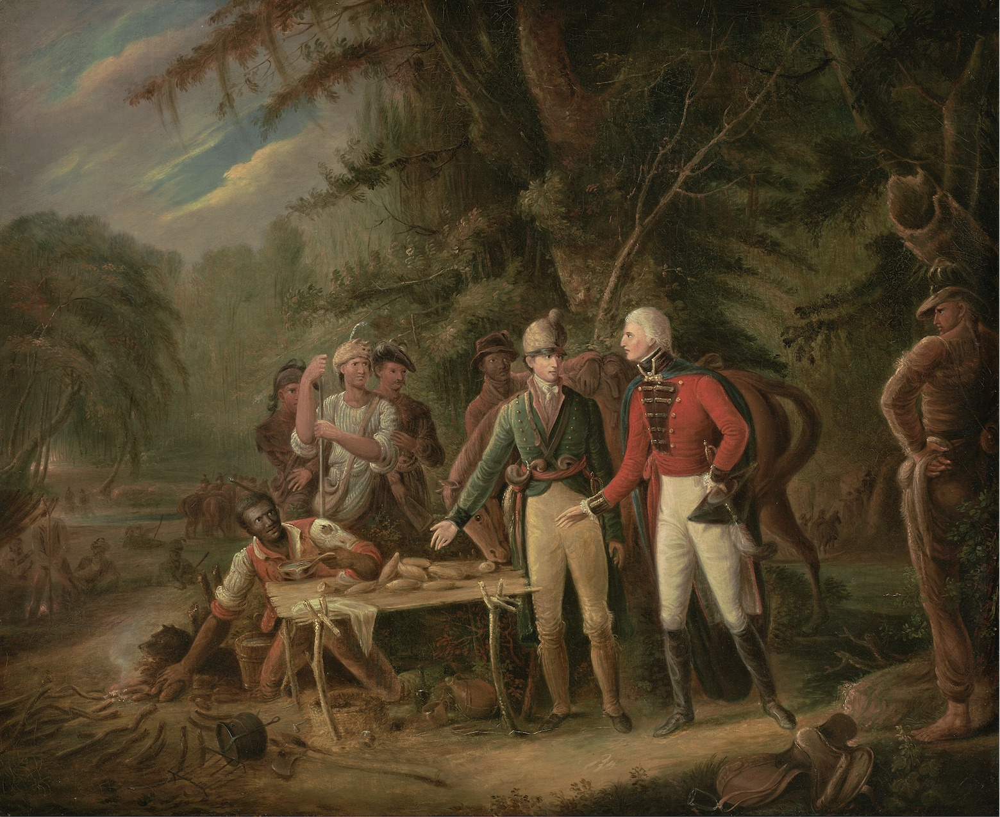

Education in Early America · Part II
How Do We Make Patriots?
Knowing how a country is governed is not the same as loving it. In Part II, we explore how early American education formed patriots through inherited duties, remembered heroes, and a sense of belonging.
Read the full article